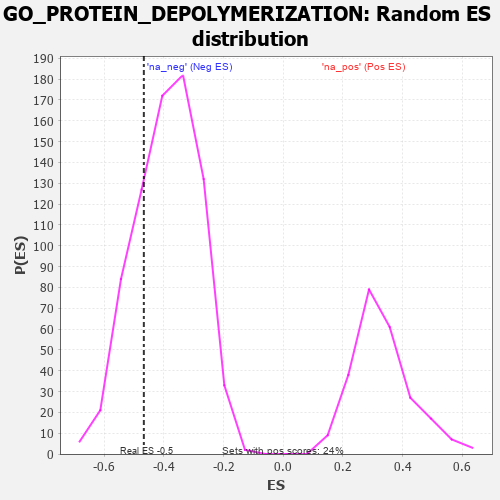

| | | Dataset | 7d |
| Phenotype | NoPhenotypeAvailable |
| Upregulated in class | na_neg |
| GeneSet | GO_PROTEIN_DEPOLYMERIZATION |
| Enrichment Score (ES) | -0.4670711 |
| Normalized Enrichment Score (NES) | -1.2045231 |
| Nominal p-value | 0.23583663 |
| FDR q-value | 0.62298584 |
| FWER p-Value | 1.0 |
Table: GSEA Results Summary
 Fig 1: Enrichment plot: GO_PROTEIN_DEPOLYMERIZATION
Fig 1: Enrichment plot: GO_PROTEIN_DEPOLYMERIZATION
Profile of the Running ES Score & Positions of GeneSet Members on the Rank Ordered List
| PROBE | GENE SYMBOL | GENE_TITLE | RANK IN GENE LIST | RANK METRIC SCORE | RUNNING ES | CORE ENRICHMENT | | 1 | TPX2 | | | 1708 | 0.355 | -0.1665 | No |
| 2 | VPS4A | | | 2654 | 0.205 | -0.2575 | No |
| 3 | TWF1 | | | 3199 | 0.123 | -0.3093 | No |
| 4 | SPAST | | | 3801 | 0.027 | -0.3812 | No |
| 5 | SYNJ1 | | | 4173 | -0.038 | -0.4227 | No |
| 6 | GAK | | | 4249 | -0.050 | -0.4254 | No |
| 7 | EPS8 | | | 4474 | -0.088 | -0.4415 | No |
| 8 | APC | | | 4558 | -0.107 | -0.4374 | No |
| 9 | FLII | | | 4795 | -0.156 | -0.4458 | Yes |
| 10 | WDR1 | | | 4824 | -0.163 | -0.4272 | Yes |
| 11 | CAPZB | | | 4908 | -0.179 | -0.4133 | Yes |
| 12 | HDAC6 | | | 5183 | -0.244 | -0.4145 | Yes |
| 13 | KIF19 | | | 5392 | -0.294 | -0.4007 | Yes |
| 14 | KIF2A | | | 5511 | -0.322 | -0.3716 | Yes |
| 15 | TTBK2 | | | 5700 | -0.376 | -0.3442 | Yes |
| 16 | ACTN2 | | | 5960 | -0.458 | -0.3144 | Yes |
| 17 | CKAP5 | | | 6032 | -0.482 | -0.2577 | Yes |
| 18 | ADD2 | | | 6046 | -0.487 | -0.1931 | Yes |
| 19 | SVIL | | | 6259 | -0.558 | -0.1438 | Yes |
| 20 | TRPV4 | | | 6515 | -0.668 | -0.0849 | Yes |
| 21 | SPEF1 | | | 6801 | -0.815 | -0.0098 | Yes |
| 22 | CIB1 | | | 7280 | -1.152 | 0.0869 | Yes |
Table: GSEA details [plain text format]

Fig 2: GO_PROTEIN_DEPOLYMERIZATION: Random ES distribution
Gene set null distribution of ES for GO_PROTEIN_DEPOLYMERIZATION